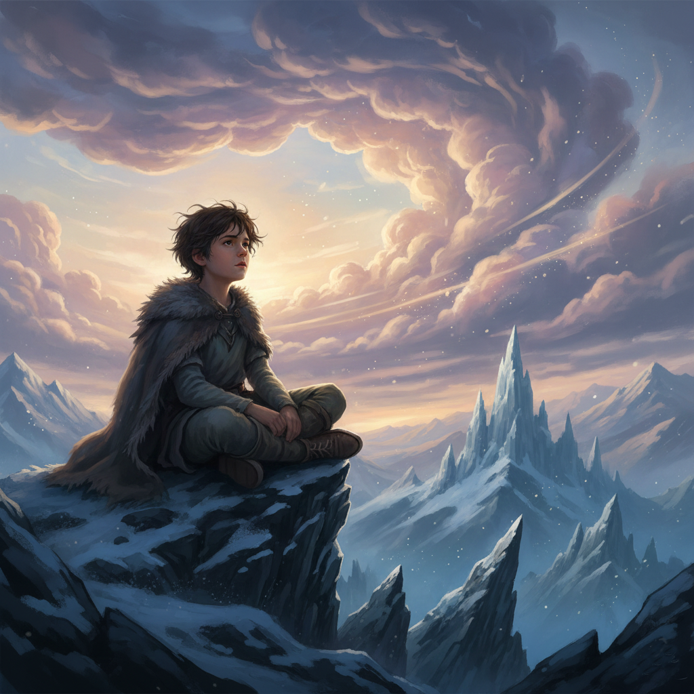
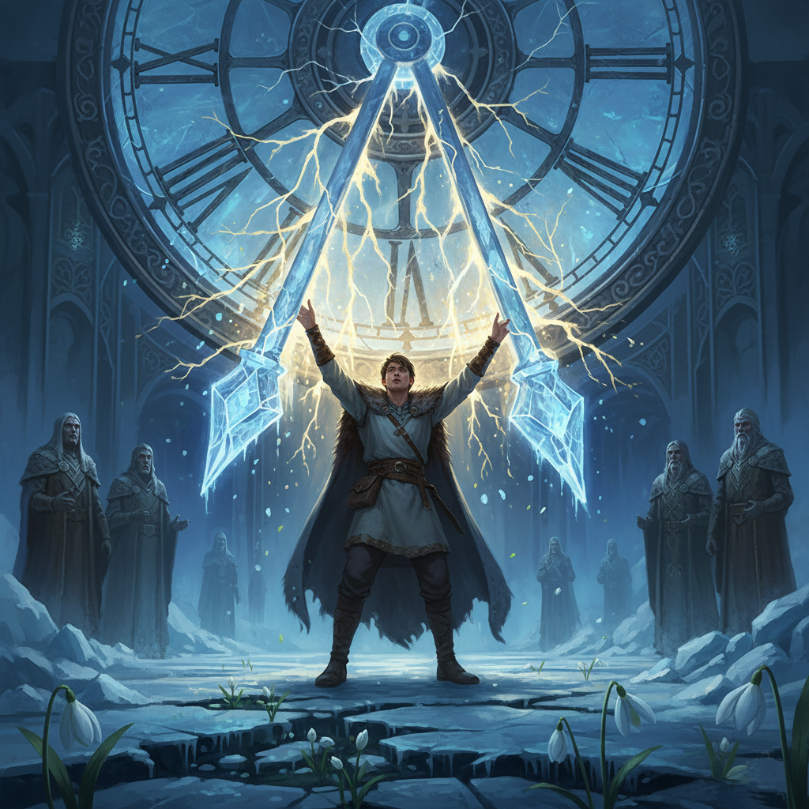
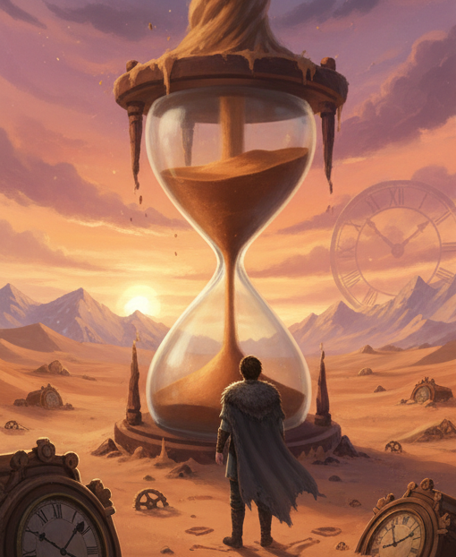
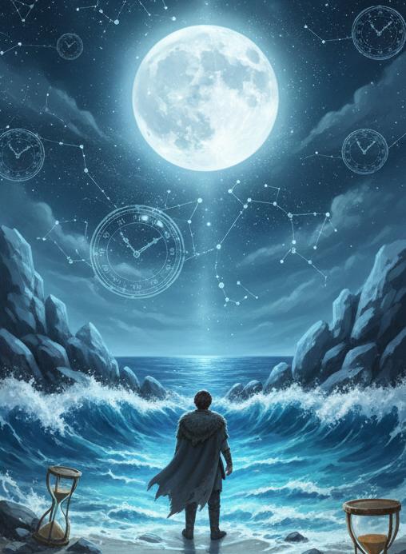
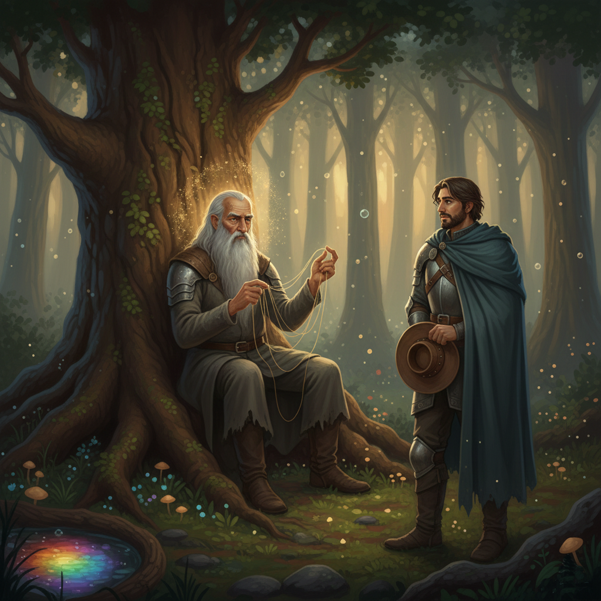

Alerion, a Várakozás Lovagja
Ajánlom egy kedves barátomnak, aki keresi a pillanatban rejlő örökkévalóságot, és mer hinni a szív órájának szavában.
Első Fejezet: Az első ébredés
A Zúzmara-fokok világa nem ismert irgalmat, csak tökéletességet. Ott, ahol a sziklák örök jégpáncélt viseltek, az Északi Tündérek városaiban megállt az élet. A paloták falaiba fagyott kristálycsillárok nem az időt, hanem az örökkévalóságot hirdették. Az ott élők hittek abban, hogy a változás a romlás előszobája, ezért mágiájukkal minden lélegzetvételt, minden hópelyhet megpróbáltak rögzíteni.
Alerion ebbe a némaságba született bele. De már kisgyermekként valami más lüktetett benne. Miközben kortársai azt tanulták, hogyan tartsák meg a fagyot a virágok szirmain, Alerion elszökött a legmagasabb bércekre, oda, ahol a szél még szabadon fütyült a hasadékok között.
Míg népe a jeget és a mozdulatlanságot imádta, ő a felhőket figyelte. Órákig ült a szédítő mélység felett, és nézte, ahogy a párás alakzatok formát váltanak: egyszer vágtázó ménekké, másszor távoli szigetekké sűrűsödtek, majd végül a semmibe foszlottak. Ebben a folyamatos elmúlásban és újjászületésben Alerion nem pusztulást látott, hanem szabadságot.
Egy alkalommal, amikor egy magányos jégszilánk levált a szikláról és a mélybe zuhant, nem a veszteséget érezte, hanem a gravitáció és a mozgás fenségességét. Rájött, hogy az idő nem egy börtön, amibe be kell zárni a szépséget, hogy megmentsük.
„Az idő nem ellenség, amit jégbe kell fojtani” – suttogta egyszer a szélnek, miközben az ujjával követte egy lassan vonuló felhő útját. „Az idő egy láthatatlan folyó. Ha megpróbáljuk gátak közé szorítani, megfagy és meghal. De ha belemerészkedünk, elvisz minket oda, ahol a lelkünk igazán otthon van.”
Ez a gondolat lett az ő titkos iránytűje. Míg a többiek lefelé néztek, a lábuk alatti szilárd és mozdulatlan jégre, Alerion mindig az eget kémlelte, keresve azt a pillanatot, ami már soha nem tér vissza, és pontosan ettől válik értékessé.
Második Fejezet: A Fagyott Idő Láncainak Eloldozása
Amikor Alerion elérte a férfiasság küszöbét, a hagyomány szerint lovaggá ütötték. Nem kardot és pajzsot nyújtottak neki, hanem egy sokkal súlyosabb terhet: ő lett a Nagy Jégóra őrzője. Ez az óra nem percek múlását jelezte, hanem magának a birodalomnak a mozdulatlanságát. Magas, éteri kristályból faragták, mutatói sosem rezdültek. Az Északi Tündérek hite szerint addig, amíg a Jégóra áll, az örök fagy megóvja őket a múlandóság fájdalmától. Alerionnak az lett volna a feladata, hogy mágiájával napról napra megerősítse ezt a mozdulatlanságot, megakadályozva, hogy a mutatók egyetlen hajszálnyit is elmozduljanak.
Azonban Alerion szívében, a gyermekkori felhők békés táncának emléke mélyebben élt, mint népének félelme. Egy hosszú, csillagtalan éjszakán, amikor a Jégóra templomának hideg boltívei alatt magányosan őrködött, a lelke felszított. Nem akarta tovább a tavasz foglyul ejtett ígéretét őrizni. Nem akarta, hogy az élet megfagyjon a kezében.
Mély levegőt vett, szívében a hegycsúcsok szele és a felhők szabadsága zúgott. Felemelte kezeit, de nem a fagyasztó mágiát idézte meg, hanem annak ellenkezőjét. A mozdulatlanság rabságában tartott energiát szabadította fel. Hosszú másodpercekig állt így, a homlokán izzadság gyöngyözött, ahogy a mélyből feltörő belső erejével szembeszállt évszázados dogmákkal.
És ekkor megtörtént. Először csak halk, reccsenő hangot lehetett hallani. A Jégóra éteri mutatói, amelyek évezredek óta egyetlen pozícióban álltak, megremegtek. A templom falai reszketni kezdtek, apró jégszilánkok peregtek le a boltívekről. A mutatók lassan, szinte fájdalmasan, egy apró kattanással elmozdultak. Azon a napon, amikor a Jégóra mutatói újra léptek, valami megváltozott a Zúzmara-fokok földjén is. A birodalom legmélyebb pontján, a sziklák árnyékában, ahol évszázadok óta csak kő és jég honolt, az első hóvirágok, törékeny, fehér fejüket kidugva kibújtak a hó alól. Apró, smaragdzöld levélkék jelentek meg a fagyott földön, jelezve, hogy a tavasz, melyet oly sokáig bebörtönöztek, végre utat talált magának.
Amikor a vén Tanács tudomást szerzett Alerion tettéről, haragjuk félelmetes volt. Nem tudták megérteni a szabadság iránti vágyát, csak a rend megsértését látták. Száműzték Aleriont a birodalomból.
„Addig nem térhetsz vissza, ifjú lovag” – dörgött a Főtanácsos hangja, rekedten a jég hidegétől és a haragtól – „amíg meg nem találod az idő valódi szívverését. Azt a helyet, ahol a pillanatok nem megfagyva, hanem szabadon lüktetnek. Akkor talán megérted a tettünk súlyát.”
És így, egy könnyű, de eltökélt szívvel, Alerion elhagyta otthonát, hátrahagyva a mozdulatlanság jeges fogságát, hogy megtalálja a világ ritmusát.
Harmadik Fejezet: Hosszú vándorlás Sivatagon, Jégen és Vízen át
Alerion hetekig gyalogolt a dűnék között, ahol az égbolt és a föld összeért a forróság remegő párafüggönyében. Itt tanulta meg az idő egy egészen más arcát. A sivatagban az idő nem jéggé dermedt pillanat volt, hanem a homokszemek végtelen, suttogó pergése.
Minden lépésnél, amit a puha dűnéken tett, érezte, ahogy a lába alatt megmozdul a föld. Rájött, hogy a sivatag valójában egy gigantikus homokóra. Ahogy a szél átformálta a dűnéket, úgy formálódott át a táj is: ami reggel még egy büszke homokhegy volt, estére völggyé lett.
„Otthon a jégbe kapaszkodtunk, hogy megállítsuk a pusztulást” – gondolta Alerion, miközben egy oázis árnyékában pihent. „Itt viszont semmi sem maradandó, mégis minden létezik. A homokszem nem küzd a szél ellen, hagyja, hogy a sivatag tánca továbbvigye.”
A sivatagban az időt nem percekben, hanem a szomjúságban és a csillagok lassú vándorlásában mérte. Megfigyelte a sivatagi népeket, akik nem siettek sehová. Tudták, hogy a nap legforróbb óráiban a mozdulatlanság az élet záloga, és csak akkor indulnak útnak, amikor a hűvös est leszáll. Itt értette meg, hogy a várakozás nem elvesztegetett idő, hanem a felkészülés szent állapota.
Egy napon hatalmas homokvihar kerekedett. Alerion nem próbált meg küzdeni ellene – hiszen mit érhetne egy lovag ereje az elemek dühe ellen? Köpenyébe burkolózott, lehunyta szemét, és várta, hogy a vihar átvonuljon felette. Amikor a szél elült, és lerázta magáról a port, látta, hogy a táj teljesen megváltozott. Egy korábban rejtett romváros falai bukkantak elő a homok alól.
Ekkor hasított belé a felismerés: Az idő nemcsak elvesz, hanem fel is fed. Ahhoz, hogy valami új megszülessen, a réginek el kell tűnnie, vagy át kell alakulnia. A sivatag megtanította neki, hogy az idő valódi szívverése nem a mozdulatlanságban, hanem a ritmikus változásban rejlik – abban a végtelen türelemben, amivel a homokszem várja a következő széllökést.
A sivatag perzselő csendje után Alerion útja a Végtelen Ezüstpartra vezetett. Itt a levegő sós volt és párás, a lába alatt pedig a puha homokot felváltották a simára csiszolt kavicsok és a nedves sziklák. Ez a hely tanította meg neki az idő legmélyebb titkát: az ismétlődés erejét.
Alerion hónapokig élt a sziklák között, figyelve az óceán hatalmas tüdejének lélegzését. Otthon, a jég birodalmában minden egyszeri volt és megfagyott. Itt viszont minden visszatért.
A lovag nap mint nap figyelte, ahogy a tenger lassan visszahúzódik, feltárva a tengerfenék titkait: csillogó kagylókat, tarka algákat és különös tengeri lényeket, amik a pocsolyákban maradtak. Ez volt az apály. Aztán, mintha csak egy láthatatlan óriás hívná, a víz újra elindult a part felé, elnyelve mindent, amit az előbb megmutatott. Ez volt a dagály.
Rájött, hogy az idő nemcsak egy irányba folyik, mint egy nyílvessző, hanem körkörös, mint egy dal refrénje.
„Az idő nemcsak múlik, hanem visszatér” – jegyezte fel magában. „Ami ma elveszik a habokban, az holnap új formában partot ér. A tenger nem siet, mégis mindig odaér, ahová tart.”

Egy napon Alerion egy tökéletesen gömbölyű, fehér követ talált a parton. Ahogy a kezében forgatta, megértette: ez a kő egykor éles, szögletes szikladarab volt. Évszázadok kellettek ahhoz, hogy a hullámok lágy, de könyörtelen simogatása ilyen simára csiszolja. Itt értette meg a kitartás és a gyengédség kapcsolatát. Az idő nemcsak pusztítani tud, hanem alkotni is – de az alkotáshoz türelem kell, amit nem lehet sürgetni.
A tengerparti éjszakákon, a holdfényben ezüstösen csillogó víz felett Alerion végre megérezte azt a bizonyos "szívverést", amiről a tanács beszélt. Ez nem egy kattogó óra volt, hanem egy mély, zúgó ritmus. A világ szíve nem a fagyott múltban és nem a bizonytalan jövőben dobogott, hanem ebben az örökös mozgásban, az adás és elvétel egyensúlyában.
Már nem félt az időtől. Lovagi köpenye megkopott, de a tekintete tisztábbá vált, mint az északi jég. Készen állt arra, hogy megkeresse azt a helyet, ahol ez a hatalmas, világméretű lüktetés egyetlen szelíd pillanatba sűrűsödik: a Szivárvány-tavat.
A tengerparti sziklák közül továbbindulva Alerion az Ezer Suttogás Erdeje felé vette az irányt. Már sokszor hallott kósza legendákat egy tóról, amelynek vize hét színben játszik, és amelynek mélyén az idő maga pihen meg, de az utat senki sem tudta pontosan.
Egy ködös alkonyon egy hatalmas, ezeréves tölgyfa tövében találta meg azt, akit keresett: a Sorsszövő Bölcset. Az öreg nem nézett fel, ujjai között finom, fénylő fonalakat pörgetett, mintha a levegőből font volna láthatatlan szövetet.
Negyedik Fejezet: A Bölcs és a Szivárvány-tó titka
Alerion tiszteletteljesen megállt. – Az idő szívverését keresem – mondta halkan. – Jártam a jégben, a homokban és a habok között, de a válasz még mindig elillan előlem.
A Bölcs ekkor felemelte fejét. Szemei olyanok voltak, mint két mély, tiszta kút. – Jó helyen jársz, vándor – felelte az öreg, hangja mintha a föld mélyéről szólt volna. – De az időnek nincs egyetlen ritmusa. Az idő olyan, amilyen a lélek, amely méri. Amit te keresel, az a Szivárvány-tó. Ott az idő nem folyik és nem is áll, hanem virágzik.
A Bölcs elhallgatott, majd egy arany fonalat húzott elő a semmiből. – De vigyázz, lovag! A tavat nem kerítés védi, hanem egy lélek. Honóra, a tótündér az őrzője. Ő nem olyan, mint a te néped tündérei. Ő a tiszta jelen pillanatból született.
Alerion feszülten figyelt. Az öreg folytatta: – Honóra a tündérrózsák levelein lépked, és minden egyes mozdulata egy-egy szívdobbanása a világnak. Ő az, aki egyensúlyt tart a múlt emlékei és a jövő álmai között. Ha őt meglátod, ne a hatalmat keresd benne, és ne is a tudást. Csak figyeld a csendjét. Ő az egyetlen, aki képes egy vízcseppben megmutatni neked az egész örökkévalóságot.
A Bölcs mutatóujját Alerion szíve felé bökve így szólt: – Sokan próbálták már megtalálni Honórát, hogy ellopják a tó erejét, vagy hogy örök életet nyerjenek. De a tó csak annak mutatja meg valódi arcát, aki képes várni. Nem fegyverrel, nem mágiával, hanem türelemmel. Honóra megérzi a szív szándékát. Ha a te szívedben még ott a jég merevsége, a tó ködbe vész előtted. De ha megtanultad a sivatag és a tenger leckéjét, ő várni fog rád egy hatalmas levélen.
Alerion megköszönte az útmutatást. Már tudta, hová kell mennie. Nem sietett, mert a Bölcs szavai után már nem az utat kereste, hanem a belső békét, amivel Honóra elé állhat.
A Sorsszövő Bölcs szavai után Alerion napokig vándorolt az Ezer Suttogás Erdejében. Már nem sietett, hanem minden lépésével a Bölcs intelmét követte: várni. Várta a pillanatot, amikor a szíve felismeri azt a helyet, amit keres. A tölgyfák sűrűsödtek, a levegő megtelt virágillattal, és egyre több tündérrózsa úszott a nedves talaj pocsolyáiban.
Ötödik Fejezet: A Szivárvány-tó Ébredése: Az Első Találkozás
Alerion egy öreg, mohás fatörzsre ült, és várta, hogy a köd eloszoljon a fák között. Nem tudta, mennyi idő telt el. Lehet, hogy órák, lehet, hogy csak percek. Aztán egy fénysugár tört át a lombok között, és elárulta a helyet.
Alerion felállt, és a fák közül kilépve megállt a Szivárvány-tó partján. Lélegzete elakadt. Ez a tó nem csupán hét színben játszott, hanem mintha az egész világ összes színét magába szívta volna. A víz felszínén tündérrózsák úsztak, minden árnyalatban pompáztak, és enyhe, édes illatot árasztottak. A tó közepén pedig, mintha a természet egy hatalmas műremeke lenne, egy gigantikus, élénkzöld levél ringatózott, rajta pedig...

...ott állt Honóra. Nem egy trónon ült, nem is pazar ruhákban pompázott. Egyszerű, zöld ruhája szinte eggyé vált a levéllel, aminek közepén kecsesen állt. Hosszú, ezüstös haja úgy hullott alá, mint a Hold fénye a Zúzmara-fokokon, és tekintetében ott volt a sivatag türelme és a tenger nyugodt ereje.
Alerion lelassította a légzését, attól tartva, hogy egyetlen apró mozdulatával is elriaszthatja ezt a törékeny szépséget. A tündér egy vízcseppet egyensúlyozott az ujja hegyén. Nem küzdött ellene, nem próbálta megfagyasztani, és nem is hagyta, hogy elfolyjon. Csak tartotta, mintha az az apró, csillogó gömb tartalmazná az egész univerzum titkát.
Abban a pillanatban Alerion megértett mindent. Ez volt az idő igazi szívverése: a jelen pillanat, megbecsülve, élve, minden küzdelem nélkül. Honóra mozdulataiban nem volt sietség, sem félelem. Csak a tiszta létezés.
Alerion levette a süvegét, és a mellkasához szorította. Nem tudta, hogy a tündér észrevette-e őt. De érezte, hogy a szíve végre megtalálta azt a ritmust, amit oly sokáig keresett. Egy békés, lassú dobbanást, ami Honóra vízcseppjének rezzenéstelen egyensúlyában tükröződött.
Honóra nem volt egyedül a várakozásban. A sors már útnak indította azt, aki képes volt megérteni a pillanat csendjét...